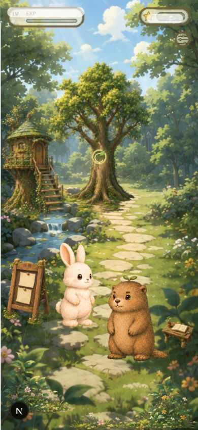

Lv1 Forest Clearing · visual weight check
同一手機比例檢視：既有扁平 runtime snapshot 與本輪高質感清場雛型。

Existing flat prototype
原有 runtime evidence（僅供對照）
Lv1 painterly clearing
土撥鼠 · 原生嫩芽 · 樹樁
 Lv1 painterly clearing土撥鼠 · 原生嫩芽 · 樹樁
Lv1 painterly clearing土撥鼠 · 原生嫩芽 · 樹樁